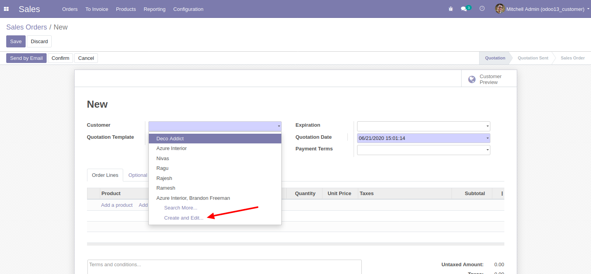
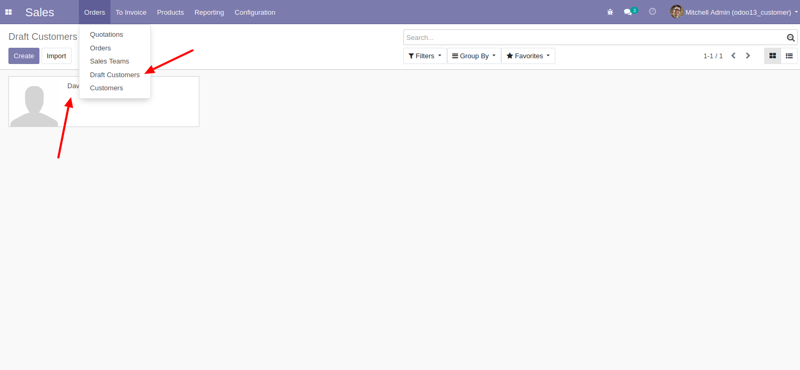
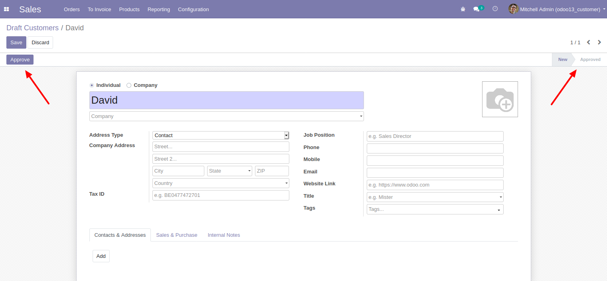
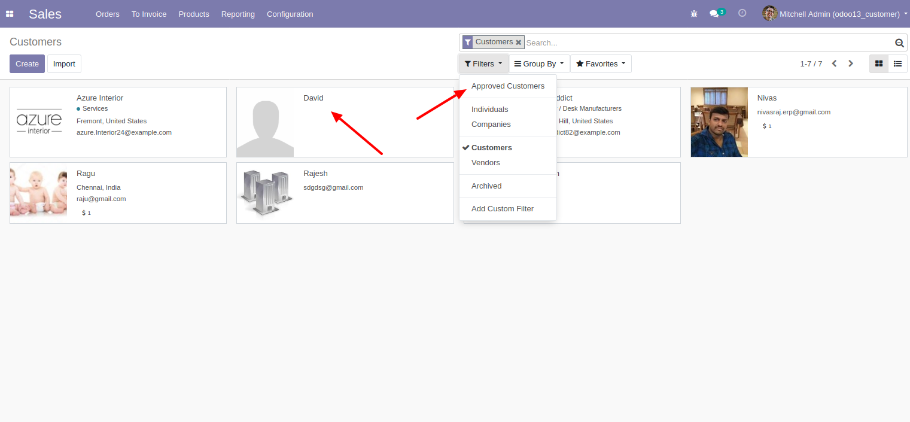

1) Create your new customer using 'Create & Edit' option

2) You can see your newly created customer record in 'Draft Customers' menu.

3) Administrator user can approve the customer since we used 'Settings' group in this button.You can use any group as per your need.

4) Added separate filter to identify 'Approved Customer'
